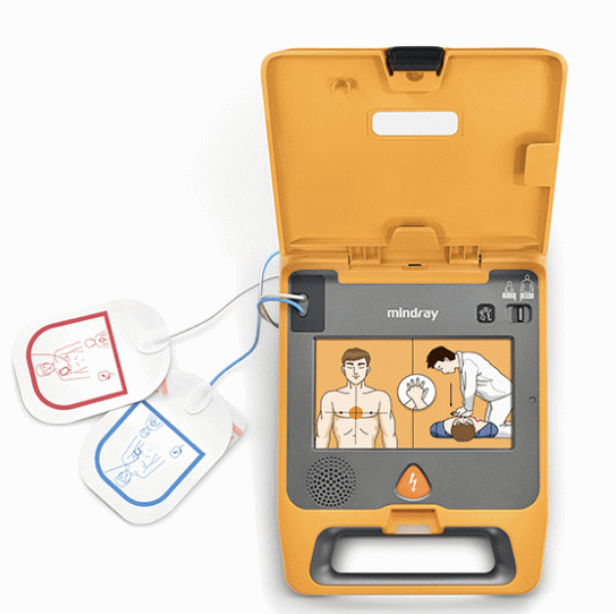

Comment utiliser un défibrillateur (DAE) ?
L'arrêt cardiaque – La défibrillation
Dans de nombreux cas d'arrêt cardiaque, le cœur continue de battre, mais le rythme des battements est tellement anormal que les contractions cardiaques sont inefficaces et que le cœur ne peut plus assumer sa fonction de pompe sanguine : c'est la fibrillation.
Cette fibrillation peut être corrigée au moyen d'un défibrillateur automatisé externe (DAE), qui analyse le rythme cardiaque de la victime avant de lui administrer, si nécessaire, un choc électrique.
Les chances de survie augmentent si la réanimation cardio-pulmonaire et la défibrillation sont entreprises dans les premières minutes qui suivent l'arrêt cardiaque.
Étapes principales de la défibrillation
1
Poursuivre la réanimation
2
Mettre en marche le DAE
3
Placer les électrodes
4
Analyser le rythme cardiaque
5
Administrer le choc si indiqué
6
Reprendre la réanimation
Technique : comment utiliser un défibrillateur (DAE) ?
Suivez ces étapes dans l’ordre :
- Poursuivez la réanimation cardio-pulmonaire jusqu'à l'arrivée du DAE.
- Dès que celui-ci est disponible, mettez-le en marche et prenez connaissance des instructions figurant sur l'appareil.
- Si plusieurs sauveteurs sont présents, l’un d’eux doit poursuivre la réanimation cardio-pulmonaire.
- Dénudez la poitrine de la victime et placez les électrodes à même la peau conformément aux instructions.
- Assurez-vous que personne ne touche la victime pendant l’analyse du rythme cardiaque.
- Si un choc est indiqué, éloignez toutes les personnes de la victime.
- Appuyez sur le bouton si cela vous est demandé (ou laissez faire l’appareil s’il est automatique).
- Si le DAE vous y invite, effectuez des compressions thoraciques sans tarder (30 compressions / 2 insufflations).
- Continuez à suivre les indications du DAE jusqu’à la reprise d’une respiration normale ou l’arrivée des secours.
- Si la respiration redevient normale, arrêtez la réanimation, mais laissez le DAE allumé et les électrodes en place. Si la victime reste inconsciente, placez-la en position latérale de sécurité.
⚠️ Aide vidéo
Regardez la démonstration.
Vidéo réalisée par la Préfecture de police de Paris